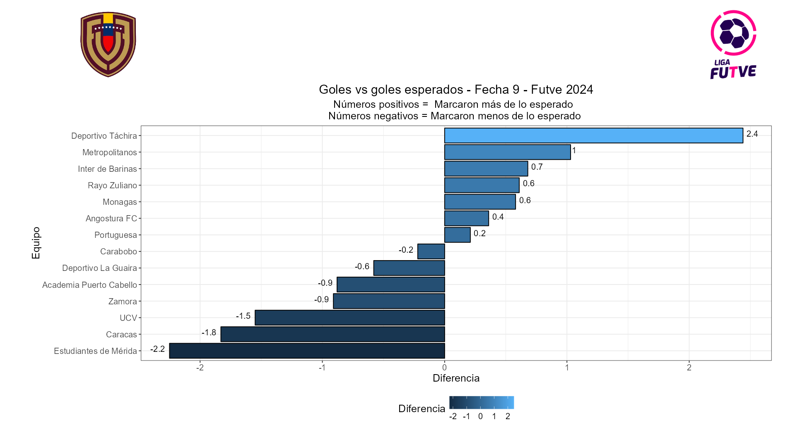
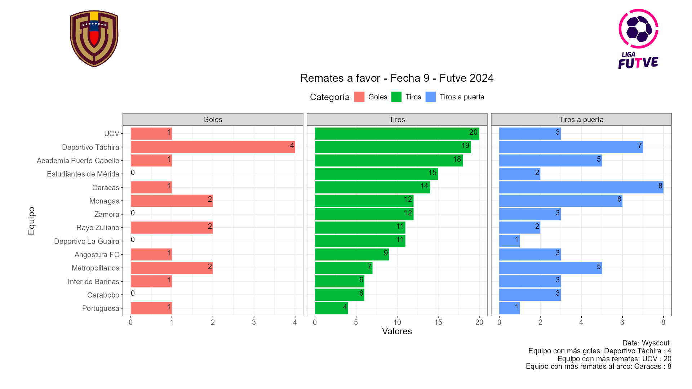
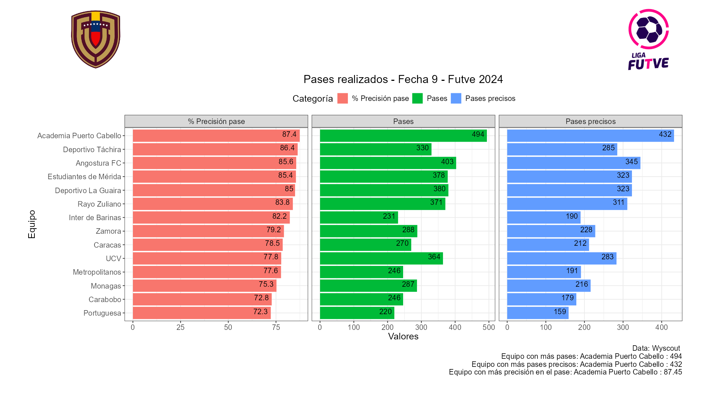
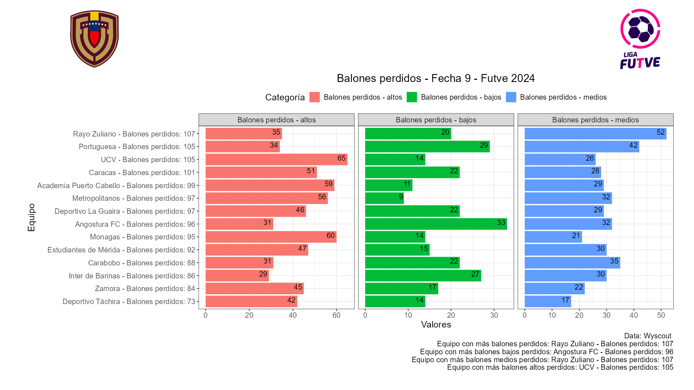
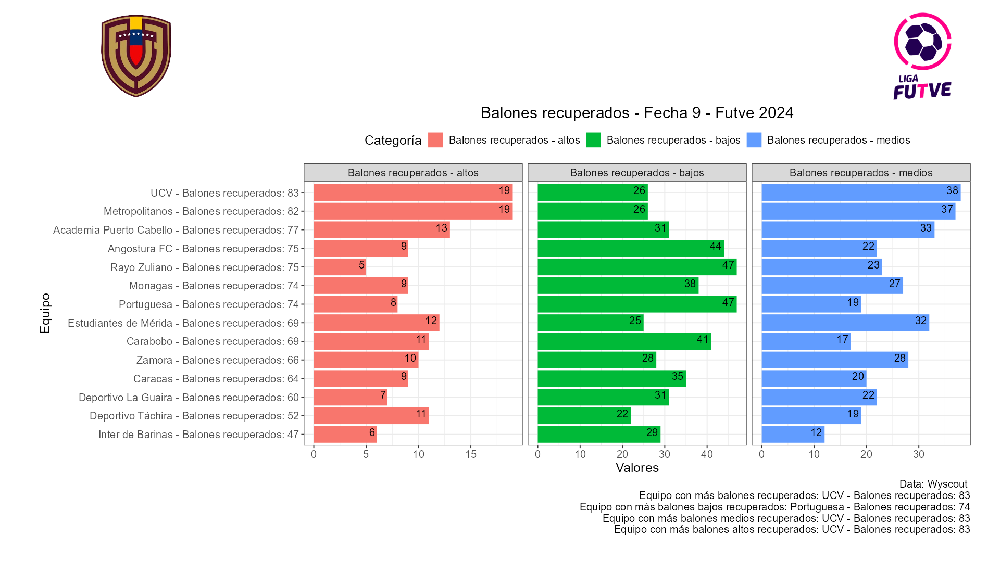
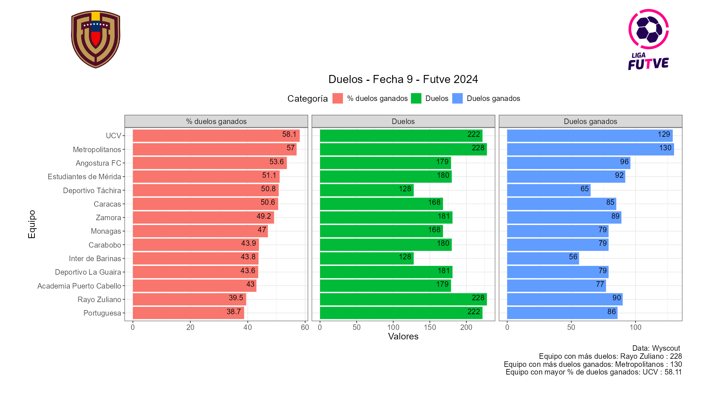

📌 El Deportivo Táchira con su victoria 4 a 1 frente al Inter de Barinas fue el equipo más efectivo y que aprovechó mejor sus ocasiones, marcando 2 goles más de lo esperado. Por otra parte Estudiantes de Mérida en su empate con el Carabobo fue el equipo que no aprovechó sus situaciones creadas que pudieron traducirse en 2 goles.
📌 La UCV fue el equipo que más disparó con 20 remates, de los cuales 3 fueron a puerta y 1 terminó en gol, esto en el empate a un gol contra el Portuguesa. El Portuguesa fue uno de los equipos más efectivos y que menos remató, realizó en el partido 4 remates de los cuales 1 fue a puerta y el mismo terminó en gol.
📌 Academia Puerto Cabello fue el equipo con mayor precisión en el pase con un 87.4% , donde realizó 494 pases, 432 de ellos precisos, esto en el empate a un gol frente el Angostura. El Portuguesa por su parte fue el equipo con menos precisión en el pase con un 72.3%, donde realizaron 220 pases, 159 de ellos exitosos.
📌 El Rayo Zuliano fue el equipo que más pérdidas contabilizó esto en el empate a 2 frente al Metropolitanos donde tuvieron 107 balones perdidos, 35 de ellos en zona alta, 20 en zona baja y 52 en zona media. Por su parte el Deportivo Táchira fue el equipo con menos pérdidas de balón con 73, 42 de ellos en zona alta, 14 en zona baja y 17 en zona media.
📌 La UCV fue el equipo con más balones recuperados contabilizando 83, 19 en zona alta, 26 en zona baja y 38 en zona media. Por otra parte el Inter de Barinas fue el equipo que menos balones recuperó con 47, 6 de ellos en zona alta, 29 en zona baja y 12 en zona media.
📌 En cuanto a los duelos ganados la UCV fue el equipo con mayor ganancia de los mismos con un 58.1%, donde disputaron 222 duelos y ganaron 129 de ellos. Esto contrasta con los número del Portuguesa (rival de turno) quien de los 222 duelos sólo ganaron 86 (38.7%).
